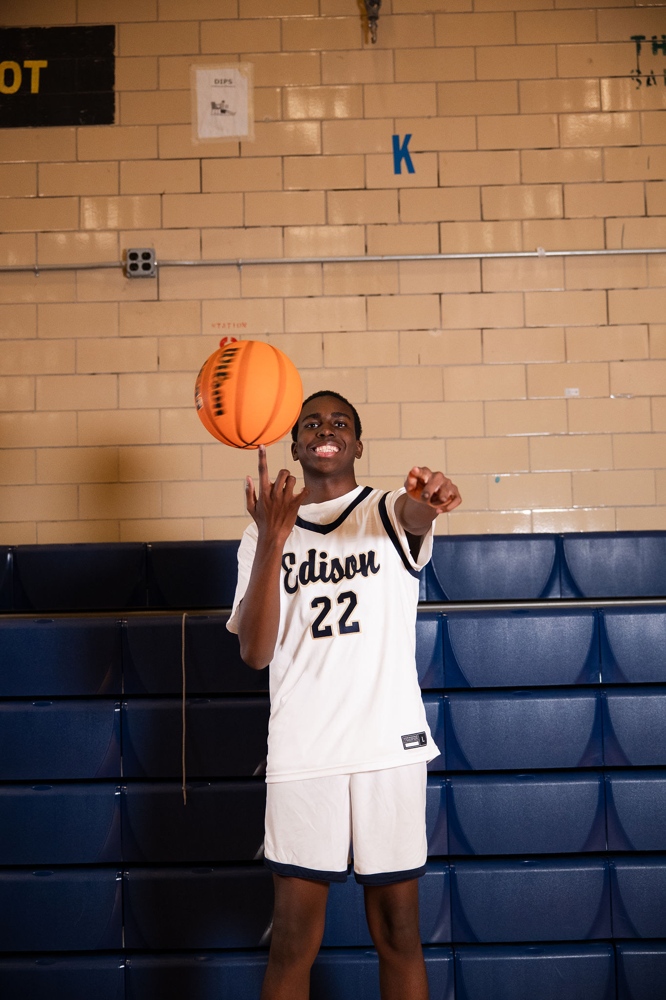

Welcome to My Portfolio
Explore my projects, skills, and growth as a Web & App Development student.

Quinn Oudkerk
Web & App Development Student
I am a high school student with a strong interest in software development and technology. My goal is to pursue a career as a professional basketball player manily the NBA, while also building strong technical skills through my Web & App Development program. These skills could be used as a backup plan with working with computers if basketball doesn't work out.
This portfolio showcases my projects, learning progress, and growth in coding, design, and problem-solving.
Professional Links
Featured Project
Holiday Animation Project
This is one of my projects I have done an it is one of my favorites that's why it's featured. It demonstrates my creativity and coding skills and I used them to create a holiday-themed animation with falling snow in the background of a snowman, which helped me improve my understanding of programming and visual design.
Skills: HTML, CSS, CodeSkulptor